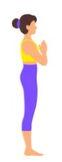
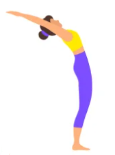
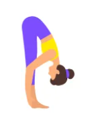
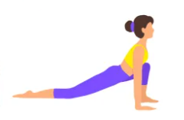
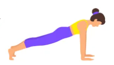
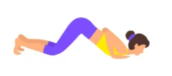
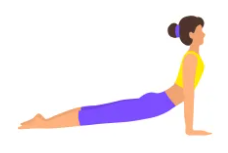
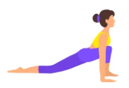

Namaskara, or Sun Salutation, is a sequence of yoga poses performed in a continuous flow. It is a holistic exercise that provides numerous benefits for both the body and mind.
Benefits of Surya Namaskara:
- Improves flexibility and strength
- Boosts blood circulation
- Enhances mental clarity and focus
- Helps in weight loss and toning
- Relieves stress and anxiety
- Stimulates digestion and detoxification
How to Perform Surya Namaskara:
-
Start in the Mountain Pose (Tadasana).
- Improves posture by aligning the spine
- Strengthens thighs, knees, and ankles
- Increases awareness of body alignment
- Relieves tension in the spine
- Improves focus and concentration
- Stretches and lengthens the spine
- Helps develop balance and stability
- Promotes better breathing habits
- Calms the mind and reduces stress
- Stand with your feet together or hip-width apart, whichever feels more comfortable.
- Keep your spine erect and shoulders relaxed.
- Distribute your weight evenly on both feet.
- Engage your thigh muscles and lift your kneecaps slightly.
- Tuck your tailbone slightly and engage your core.
- Lengthen your spine upward, reaching through the crown of your head.
- Keep your arms relaxed by your sides with palms facing forward.
- Focus your gaze forward or gently close your eyes.
- Breathe deeply and hold the pose for 30 seconds to 1 minute.
- To release, exhale and gently lower your arms.
-
Raise your arms overhead in the Raised Arms Pose (Urdhva Hastasana).
-
Bend forward into the Standing Forward Bend (Uttanasana).

Tadasana, also known as the Mountain Pose, is a foundational yoga pose that focuses on alignment and posture. It may seem simple, but it's a powerful pose with numerous benefits for the body and mind.
Benefits of Tadasana:
How to Perform Tadasana:
Practice Tadasana regularly to experience its full benefits. It's a great pose to start your yoga practice or as a grounding posture throughout the day.



Step your right leg back into a lunge, transitioning into the Low Lunge (Anjaneyasana).

Step your left leg back to plank position, then lower down into the Four-Limbed Staff Pose (Chaturanga Dandasana).

Lower your hips to the floor and lift your chest into the Cobra Pose (Bhujangasana).

Push back into the Downward-Facing Dog Pose (Adho Mukha Svanasana).
Step your right foot forward into a lunge, transitioning back into the Low Lunge (Anjaneyasana).

Step your left foot forward to meet your right foot in the Standing Forward Bend (Uttanasana).

Raise your arms overhead again in the Raised Arms Pose (Urdhva Hastasana).

Return to the Mountain Pose (Tadasana).
Repeat the sequence, starting with the opposite leg in step 4. Aim for 5-10 rounds initially, gradually increasing as you become more comfortable with the flow.